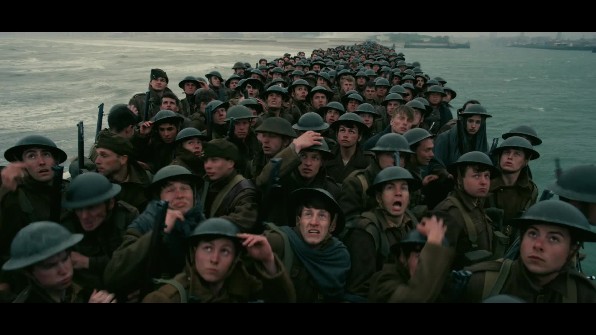

Directed, written, and produced by Christopher Nolan, this film grabs the viewer’s sense and brings them right into the movie. Featuring three separate timelines, the film depicts the stranding of British and French troops on the island of Dunkirk and the rescue operation to get them off of it. The film is masterfully shot and composed, and may just be true film auteur Nolan’s best film yet. The film was also nominated for Best Director, Best Cinematography, Best Film Editing, Best Original Score, Best Production Design, Best Sound Editing, and Best Sound Mixing. 
Back